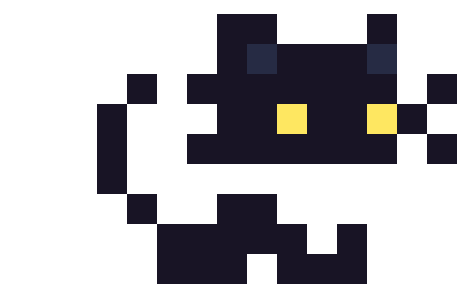
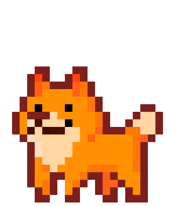

Mingau
O gato espacial
Lista de crédtidos:
Desenvolvido por: Moisés Ribeiro
Código adaptado de: Manual do Dev
Algumas funcionalidades adaptadas de: LeehXD
Gif do Mingau por: Matthew Morrison
Gif do Mingau sentado por: IamJagvinderSingh
Ícone do Mingau por: XaRaqq
Gif do novelo por: Emily
Novelos PNG de: Freepik
Touca PNG de: Freepik
Petisco PNG de: Kohacu
Space Background de: Pixel Joint
Planeta Background por: pikisuperstar
Créditos Background por: rsaucedo418
Theme audio por: Vlad Krotov
Game over audio por: Virtual_Vibes
Vida extra audio por: floraphonic
Perde vida audio por: Universfield
